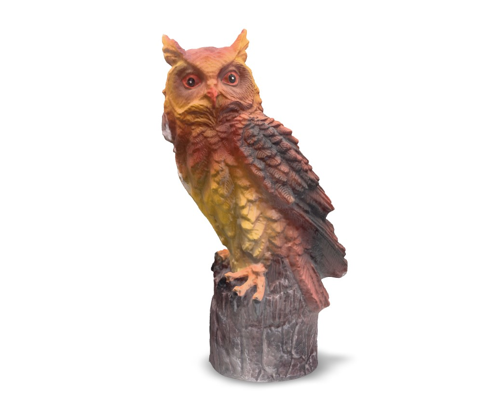
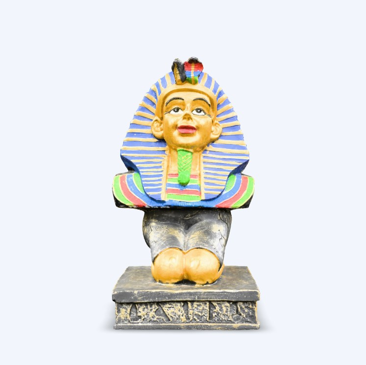
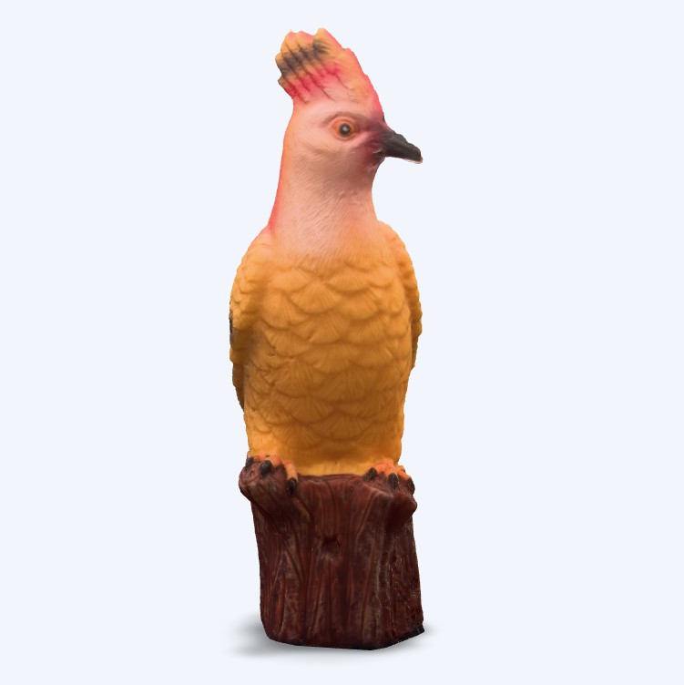
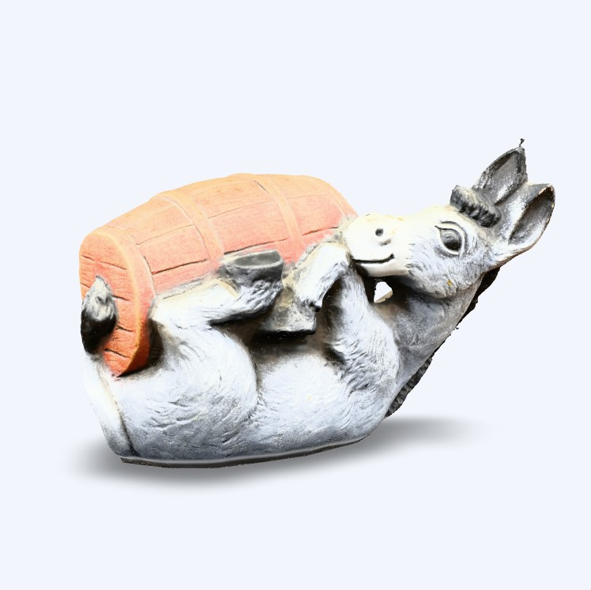
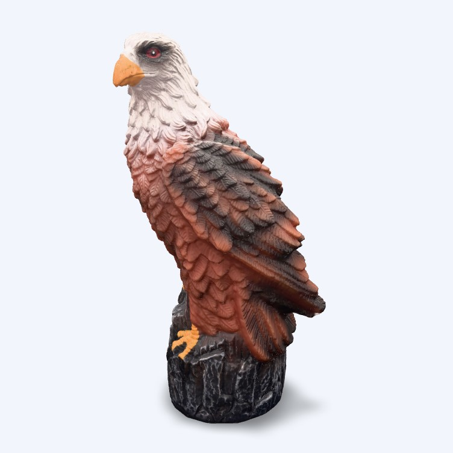
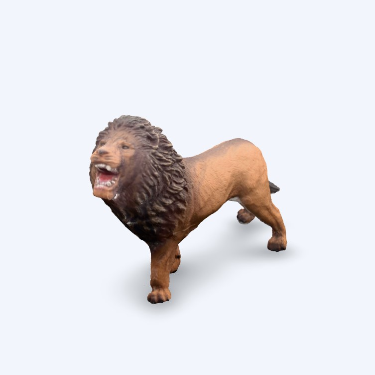
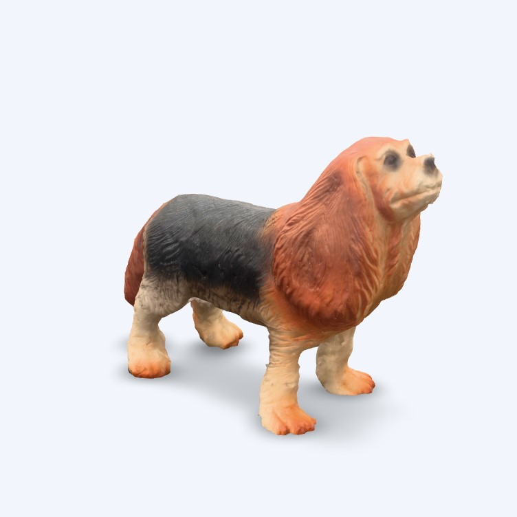

Разгледайте висококачествени триизмерни модели, създадени чрез съвременни методи за фотограметрия и интерактивна визуализация.
Настоящият проект представя възможностите на фотограметрията за създаване на високоточни триизмерни модели на реални обекти.
Чрез заснемане на множество изображения, специализиран софтуер обработва информацията и генерира реалистичен 3D модел, който може да бъде разглеждан интерактивно директно през уеб браузър.
Платформата има за цел да демонстрира възможностите на съвременните технологии за дигитализация, съхранение и популяризиране на културно и природно наследство.
3D Модела
Заснети снимки
% Интерактивен достъп
Година
Обектът се заснема от всички възможни ъгли с висока степен на припокриване между изображенията.
Софтуерът намира общите точки между изображенията и определя позицията на всяка снимка.
Генерира се високоточен облак от милиони пространствени точки.
Създава се геометрията на триизмерния модел.
Прилагат се реалните изображения върху модела за максимален реализъм.
Финалният модел се публикува в интерактивна уеб платформа.







Заснемане на множество изображения за създаване на високоточни 3D модели.
Обработка на изображенията, генериране на point cloud, mesh и текстури.
Модерна и адаптивна уеб платформа, достъпна от всяко устройство.
Интерактивност, плавни анимации и динамично съдържание.
Интерактивно разглеждане на 3D модели директно в браузъра.
Разработен като демонстрационна платформа за обучение и презентации.
Разработен като част от дипломна работа, демонстрираща приложението на фотограметрията и интерактивната 3D визуализация.
Селин Шенгова
г-н Янчев
ПМГ „Яне Сандански“
Ако желаете повече информация относно проекта, фотограметрията или разработката на интерактивни 3D модели, можете да се свържете с нас.